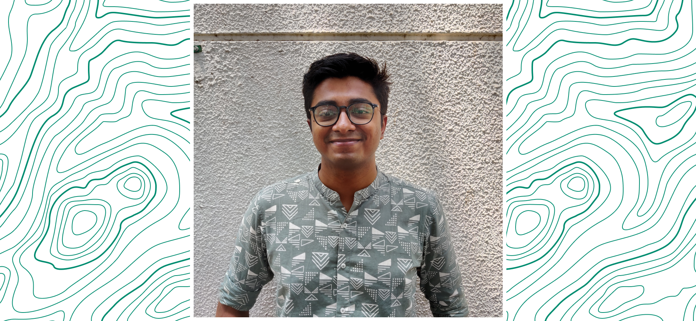

Hey, gorgeous human! Arko here.
👋 Welcome to this ephemeral online residence! Very kind of you to stop by. While design is omnipresent, I'm not. I'm currently based out of 📍 Bangalore, India.
To give you an idea about the kind of design that I dabble in, I'm into Interface, Experience & Graphic design. If you think about it, design is what makes life, life. Apart from design, I write code too. Graduated in 2019 from PES University, Bangalore with a degree in Computer Science & Engineering.
👋 Welcome to this ephemeral online residence! Very kind of you to stop by. While design is omnipresent, I'm not. I'm currently based out of 📍 Bangalore, India.
To give you an idea about the kind of design that I dabble in, I'm into Interface, Experience & Graphic design. If you think about it, design is what makes life, life. Apart from design, I write code too. Graduated in 2019 from PES University, Bangalore with a degree in Computer Science & Engineering.